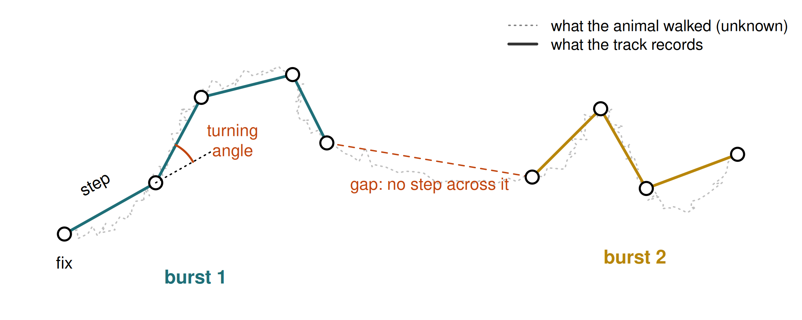
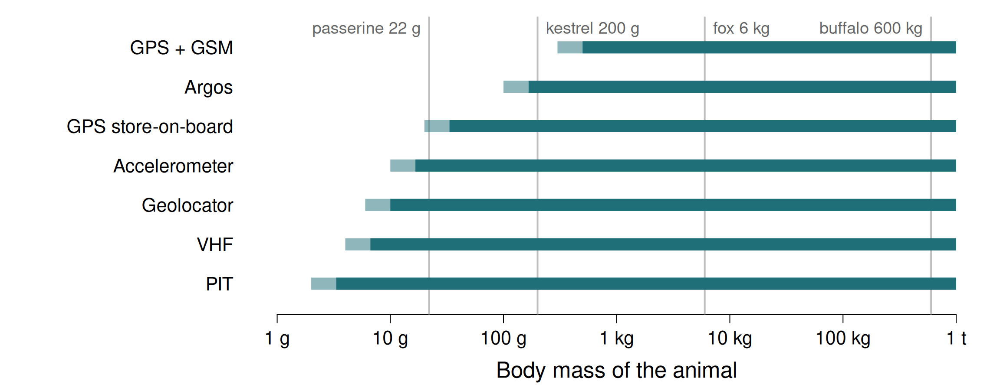
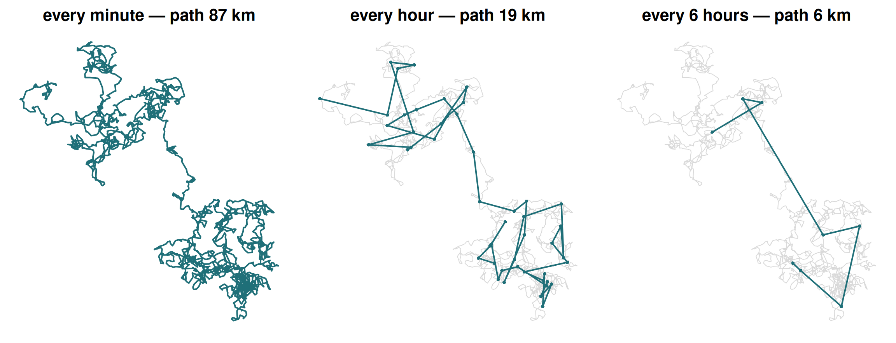
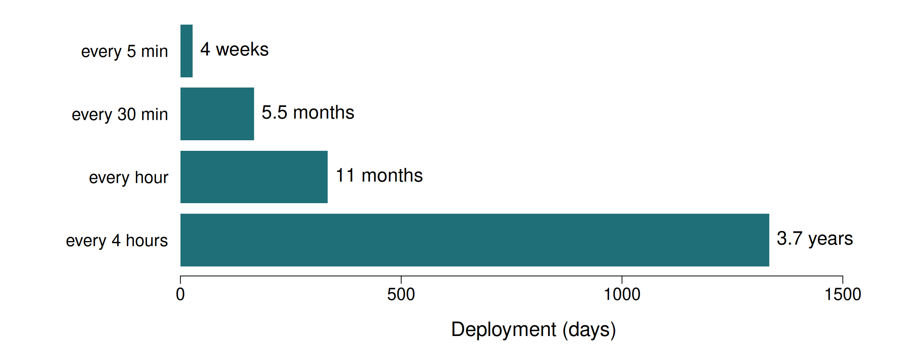
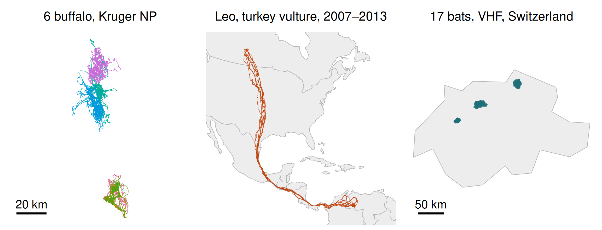

Why animals move, and how we watch them
Session 1 — Foundations: why animals move, tracking technologies, data types
University of Rome Tor Vergata
2026-10-26
Where we are going
By the end of today you will be able to
- State the four components of the movement-ecology paradigm
- Name the ecological drivers of movement and the trade-offs between them
- Pick a tracking technology for a given species, question and budget
- Explain what a fix is, and how the fix interval shapes the path you see
- Load a real GPS track in R and find its gaps
Eight sessions, one framework
| 1 · Foundations | 5 · Movement models & simulation |
| 2 · Spatial data in R | 6 · Home ranges & space use |
| 3 · From fixes to trajectories | 7 · Habitat selection: RSF & SSF |
| 4 · Quantifying movement | 8 · Hidden Markov models & synthesis |
Every session: ~45 minutes of theory, ~75 minutes of R.
How the quizzes work
Throughout the slides you will meet questions like this one. Click an answer. Nothing is graded, nothing is recorded.
What happens when you click an option?
Exactly — the deck reveals the correct answer(s) in green and unfolds a short explanation. There is an “ask again” button to reset it. Answer honestly: a wrong answer now is information, a wrong answer in June is a problem.
1 · Why movement matters
Movement is the link between an animal and its environment
Almost every process a conservation biologist cares about is a movement process in disguise:
- Gene flow — dispersal distances set population connectivity
- Disease spread — contact rates are an outcome of where animals go
- Population persistence — can individuals reach the next patch?
- Human–wildlife conflict — where do animals and people overlap, and when?
- Protected-area design — a reserve that does not contain the movements it was drawn for does not work
- Climate response — range shifts are dispersal events, one individual at a time
If you cannot describe how an organism moves, you cannot predict how it will respond to a changing landscape.
The data deluge

Trend of “movement-related” package downloads from CRAN
Figure produced with own R code · data: CRAN downloads from the Posit mirror, via cranlogs
The constraint has moved. It used to be getting locations. It is now knowing what to do with them.
The movement ecology paradigm
Nathan et al. (2008) reduced the whole field to four questions about every movement path:
- Why move? — the internal state. Hunger, thirst, reproduction, fear. The motivation.
- How to move? — the motion capacity. Legs, wings, fins; the biomechanical envelope.
- When and where to move? — the navigation capacity. Memory, senses, cues, orientation.
- What external factors? — the environment. Landscape, weather, predators, other individuals, people.
\(U_t = f(\Omega, \Phi, r_t, w_t)\) — the observed path is the joint outcome of all four. This is why a track is hard to interpret: many different combinations produce similar-looking paths.
Our spine for eight weeks
Internal state Motion capacity Navigation capacity External factors Movement path
Each session opens with this diagram, lit up where that session’s methods speak. Tracking data record only the bottom box. Every method in this course is an attempt to reason upwards from the path to the boxes above it.
Why move? The ecological drivers
- Foraging — resources are patchy and deplete; staying costs as much as leaving
- Dispersal — leaving the natal area: avoids inbreeding and competition with kin
- Migration — seasonal, round-trip tracking of resources across large distances
- Predator avoidance — moving away from risk, or towards refuges
- Reproduction — finding mates, defending territories, provisioning young
These map onto different scales of movement: foraging steps in minutes, dispersal once in a lifetime, migration once a year. The same animal does all of them — which is why one trajectory usually hides several processes.
Movement is a trade-off
Every movement decision balances gain against cost:
- Energy — travelling costs calories; a richer patch further away may not pay
- Risk — the best food is often where predators are; the landscape of fear (Laundré et al. 2001) can matter as much as the landscape of food
- Information — exploring costs now but may pay later
- Time — a day spent travelling is a day not spent feeding or breeding
When a model says an animal “selects” a habitat, it is summarising the net outcome of all these trade-offs. Sessions 7 and 8 are about disentangling them.
Quiz
After wolves returned to Yellowstone, elk in wolf-rich areas made less use of aspen stands, a key forage (Fortin et al. 2005). Assuming the forage itself did not change, which component of the paradigm explains the shift?
Forage did not change, so the habitat itself did not change. What changed was predation risk — an external factor — which altered the elk’s internal state and therefore the trade-off between food and safety. This is the landscape of fear idea.
It also shows why the four components cannot be read separately: the same external change works through the animal’s internal state. It is also why a habitat-selection model fitted before and after wolf reintroduction would give different coefficients for the same, unchanged vegetation.
Lagrangian vs Eulerian
Lagrangian
Follow the individual.
Telemetry, biologging, mark-recapture.
“Where did animal #7 go?”
Gives you the process: the sequence of decisions.
Eulerian
Watch a fixed place.
Camera traps, transects, counts, eDNA.
“How many animals passed this point?”
Gives you the pattern: density in space.
This course is almost entirely Lagrangian — but remember the two are linked: a distribution is what you get when you integrate movement over time.
Vocabulary — get this right now
| Term | Meaning |
|---|---|
| Fix (or relocation) | One estimated location with a timestamp. The atom of everything. |
| Track / trajectory | An ordered sequence of fixes for one individual |
| Burst | A stretch of a track with regular sampling and no big gaps |
| Step | The straight segment between two consecutive fixes |
| Step length (SL) | Distance of a step. Note: not distance travelled |
| Turning angle (TA) | Change of direction between consecutive steps |
| Fix rate / sampling interval | How often the tag tries to locate |
| Fix success rate | Fraction of attempts that produced a location |
| Deployment | One tag, on one animal, over one period |
A track is not the path the animal walked. It is a sample of that path. Everything between two fixes is an assumption.
The vocabulary, in one picture

Figure produced with own R code · schematic
Nine fixes, two bursts, seven steps. The dotted path is what happened; the straight lines are what we analyse.
Quiz
A GPS collar is set to attempt a fix every hour. Over one day it produces 18 locations. The straight-line distances between consecutive fixes sum to 4.1 km. Which statements are true?
4.1 km is a lower bound: the animal’s real path between fixes is at least as long as the straight line, and usually much longer. Summed step length is scale-dependent — sample twice as often and it grows.
18/24 = 75% success. And the missing fixes are the opposite of ignorable: GPS failures are not random. Fixes fail under canopy, in gorges, in dense cover — exactly the habitats an animal may be selecting. Missing data are themselves an ecological signal.
2 · How we track animals
The toolbox, from cheapest to most expensive
| Method | Locations? | Typical cost | |
|---|---|---|---|
| 🏷️ | Marks & recapture | Two points, maybe | € |
| 📻 | VHF radio-telemetry | Human-limited | €€ |
| 🛰️ | Argos (Doppler) | 250 m – 10 km | €€€ |
| 📡 | GPS store-on-board | 5–30 m | €€€ |
| 📱 | GPS + GSM / Iridium | 5–30 m, live | €€€€ |
| 💡 | Light-level geolocators | ~100–200 km | €€ |
| 📈 | Accelerometers / IMU | No — behaviour | €€ |
| 🔊 | Acoustic telemetry | Receiver range | €€€ |
There is no best technology. There is only the best technology for this animal, this question, and this budget — and the animal’s body mass usually decides for you.
Marking individuals: the cheap and enduring methods

Photo: Giuliano Colosimo

Photo: Giuliano Colosimo
Marks give you recaptures, not tracks — two or more points separated by a long, unobserved interval. Cheap, long-lasting, and still the backbone of demographic work.
Marking: from mutilation to photographs

Source: Waichman A. (1992) Herpetological Review 23:19–21
Effective, permanent — and now ethically contested. Increasingly replaced.

Photo: marioeffe, Natura Mediterraneo forum
Natural markings cost the animal nothing. Photo-ID software now does the matching at scale.
Photo-identification at scale

Automated recognition of individual iguanas
Image courtesy of Nathalie Duporge
Pattern-matching algorithms turn a shoebox of photographs into a capture–recapture dataset — for whale sharks, giraffes, newts, iguanas.
Genetic tagging

Species and locations where genetic tagging has delivered demographic insight
Source: after Lamb et al. (2019) Ecological Applications 29:e01876, doi:10.1002/eap.1876
Hair snags, scats, feathers: the animal is never handled. Biased towards mid-to-large mobile mammals, because that is where the money and the conflict are.
VHF radio-telemetry

Photo: Giuliano Colosimo

Photo: Giuliano Colosimo
The tag emits a pulse; you find it. A location comes from homing in or from triangulation of ≥2 bearings. Tags go down to 0.2 g — nothing else reaches insects and the smallest bats.
What triangulation actually costs you
- Each bearing has error; the location error is the intersection polygon of two noisy bearings, and it grows fast with distance
- Data arrive when a human is in the field — so nights, storms and weekends are systematically under-sampled
- A few dozen to a few hundred fixes per animal, unevenly spaced
- Cheap tags, expensive fieldwork
The bat dataset we will use in Session 3 is exactly this: 17 individuals, 1,740 fixes in total, wildly irregular. Most methods in this course assume regular sampling. Part of your training is learning to say “not with these data”.
GPS: trilateration

The GPS constellation
Animation: El pak, Wikimedia Commons, public domain

- Each satellite broadcasts its position and a very precise time
- Distance to a satellite = (signal travel time) × c
- 3 satellites fix a position in principle; a 4th is needed to solve the receiver’s clock error — and more give altitude and redundancy
GPS in practice, on an animal
What you get
- Horizontal error typically 5–30 m under open sky
- A quality flag: number of satellites, DOP (dilution of precision), 2D vs 3D fix
- Optional altitude, speed, temperature, activity
What it costs
- A cold start (no recent almanac) can take minutes and drain the battery
- Canopy, canyons, burrows and water block the signal
- Energy scales with fix rate — this is the central design trade-off

Photo: Giuliano Colosimo
Getting the data off the animal
- Store-on-board — cheapest, best battery use, but you must recapture the animal. Lose the animal, lose everything.
- VHF/UHF download — get close, pull the data over the air
- GSM / SMS — near-live data wherever there is mobile coverage. Fails in exactly the remote places you care about.
- Iridium / Argos uplink — global, live, expensive, small data volumes
- Drop-off collars — timed or remotely triggered release, then go and find the collar. Elegant, and one more thing that can fail.
Ask “how will I get the data back?” before you buy the tags. This is the question most first projects get wrong.
Argos, geolocators, and the aquatic world
Argos
Satellites measure the Doppler shift of the tag’s transmission.
Error ~250 m to >10 km.
Global, works at sea, decades of history. Still standard for sea turtles, seabirds, pinnipeds.
Geolocators (GLS)
Log light level. Day length → latitude; time of local noon → longitude.
Error 100–200 km. Useless near equinox.
But: ~0.3 g. For small migratory birds it is the only option.
Acoustic telemetry
Tag pings; fixed hydrophones listen.
You get detections at receivers, not positions — a network problem, not a trajectory problem.
Fish, sharks, invertebrates.
Biologging: sensors that are not locations
- Tri-axial accelerometers — the workhorse. At 10–50 Hz you can classify feeding, resting, flying, and estimate energy expenditure (ODBA)
- Magnetometers + gyroscopes — heading and body rotation; combined with accelerometers gives dead reckoning: a fine-scale path between GPS fixes
- Pressure / depth — dive profiles
- Temperature, heart rate, gut temperature — physiology in the wild
- Proximity tags — who was near whom, and for how long: social networks
The frontier is not more locations. It is locations plus sensors: knowing where and what the animal was doing there. Session 8 is the statistical version of this question when all you have is the trajectory.
Archival tags and camera traps
Archival tags
Store everything on board — depth, temperature, light, acceleration — for months or years. No transmission, so tiny and long-lived.
The catch: you only get the data if you get the tag back. Pop-up archival tags on fish detach and float to the surface to transmit a summary.
Camera traps
Eulerian, not Lagrangian: they watch a place, not an animal.
But they are the natural complement to tracking — who else uses the places your collared animals use, when, and how often? Occupancy and spatial capture–recapture models connect the two worlds.
Quiz
You must study the migratory route of a 22 g passerine that breeds in Italy and winters somewhere in sub-Saharan Africa. Individuals return to the same nest box each spring. Which technology?
The 5% rule decides it: the tag should stay under ~5% of body mass, so ~1.1 g here. That excludes GPS/GSM and Argos PTTs outright. VHF has no transcontinental range.
A geolocator weighs a few tenths of a gram. Its 100–200 km error would be useless for home-range work but is irrelevant for a 4,000 km migration.
And crucially: geolocators are store-on-board, so the whole design depends on the birds’ nest-box philopatry — you must recapture them. That is not a detail, it is the study.
Choosing: the trade-off table
| Accuracy | Min. mass | Data return | Temporal coverage | |
|---|---|---|---|---|
| Marks / PIT | Point of capture | ~0.1 g | On recapture | Sparse |
| VHF | 10s–100s m | 0.2 g | Manual, live | Human-limited |
| Geolocator | 100–200 km | 0.3 g | On recapture | Continuous |
| Argos | 250 m – 10 km | ~5 g | Remote, global | Good |
| GPS store-on-board | 5–30 m | ~1 g | On recapture | Programmable |
| GPS + GSM | 5–30 m | ~15 g | Remote, live | Programmable |
| Accelerometer | — (behaviour) | ~0.5 g | Usually on recapture | Very high rate |
Read this table right to left. Start from “how do I get the data back and how much does the animal weigh”, not from “what accuracy would be nice”.
Which tags can this animal carry?

Figure produced with own R code · tag masses from the trade-off table
Bars: animals heavy enough for each tag under the 5% rule (light) and the 3% rule for flyers (dark). The 22 g passerine of the quiz can carry a PIT, VHF, geolocator or accelerometer — nothing that transmits a position.
3 · Doing it responsibly
Tag effects are real
- The 3–5% rule (tag ≤ 3% of body mass for flying animals, ≤ 5% for terrestrial ones) is a convention, not a finding. Portugal & White (2018) showed miniaturisation has not made published studies lighter relative to body mass — researchers just tag smaller animals.
- For flying and diving animals, drag and shape matter more than mass. A streamlined 3% package can beat a bluff 1.5% one.
- Documented effects: reduced breeding success, higher energy expenditure, altered diving, changed social status, injury at the attachment site.
- Effects are often delayed — and studies are rarely designed to detect them.
A tagged animal is, to some degree, a modified animal. The honest position is to minimise, measure and report the effect — not to assume it away.
Ethics and permits: the checklist
- Is the question worth it? Would existing data answer it?
- 3 Rs — replace, reduce, refine. The smallest sample that can answer the question.
- Ethics approval and national/regional permits, before fieldwork. In Italy: ISPRA and regional authorisations; EU Directive 2010/63 where applicable.
- Capture and handling protocol, anaesthesia where required, trained personnel.
- Attachment — weak links and planned drop-offs so nothing is worn forever.
- Data sensitivity — for poached species, publishing exact coordinates can be lethal. Movebank supports embargo and coarsening.
- Report the effects you observed, including the animals you lost.
Quiz
Which of these is the strongest argument for choosing a 30-minute fix interval over a 5-minute one, for a study of buffalo habitat selection?
Fix interval is a battery decision, and therefore a decision about how long you observe. 5-minute data over six weeks and 30-minute data over a year answer different questions — and for seasonal habitat selection, the year wins.
Accuracy per fix does not change with rate. Software is not the constraint. And “it’s the standard” is never a reason — it is a description of what other people’s batteries could manage.
The real cost: coarse sampling truncates the step-length distribution. You will see this bite in Sessions 4 and 7.
4 · Sampling design
The fix interval decides what path you see

Figure produced with own R code · simulated data
The same two days of simulated movement (grey), sampled at three rates.
The modifiable temporal unit problem
The spatial version is famous in geography (Openshaw 1984): results change with the size of the spatial units you aggregate into. Tracking has its own temporal version.
- Path length shrinks as the interval grows — every straight segment cuts corners the animal actually walked
- Speed is really distance per interval: the same animal is “slower” when sampled more coarsely
- Tortuosity and turning angles change — fine sampling shows wiggles, coarse sampling shows randomness
- Behaviours shorter than the interval become invisible
There is no “true” speed or step length independent of the fix interval. Choose the interval from the question, and never compare metrics across studies sampled at different rates.
Designing a deployment
Four numbers you fix before the first capture:
- Fix interval — set by the fastest behaviour you need to resolve
- Duration — set by the slowest process (seasonal selection needs a year)
- Number of animals — set by the population question; individuals vary
- Battery — the budget that forces 1 × 2 × 3 into a compromise
Interval × duration × number of animals ≈ constant for a given budget. A study of foraging decisions and a study of seasonal range shifts need different collars, or at least different schedules.
One battery, many designs

Figure produced with own R code · illustrative battery budget
An illustrative battery worth 8,000 fixes. Fine sampling buys detail and costs duration — nearly a month at 5 minutes, nearly a year at 1 hour.
Quiz
You compute a buffalo’s daily travel distance from hourly fixes and get 4 km. A colleague using the same collars set to fix every 5 minutes reports 9 km for the same population. What is the most likely explanation?
Summed step length is a lower bound on the distance travelled, and the bound tightens as sampling gets finer: every hourly step cuts across the wiggles that 5-minute fixes capture. More than doubling is entirely normal.
There is a second, smaller effect working the other way: at very fine intervals GPS error adds spurious zig-zag, inflating distance. That is why the “right” interval is not simply “as fine as possible”.
Neither 4 km nor 9 km is the daily distance. Each is a daily distance at a given sampling interval, and must be reported that way.
5 · The three biases
Bias 1 — Fix success is not random
- GPS fixes fail under dense canopy, in steep terrain, in burrows, underwater
- So the fixes you have are biased towards open habitat
- Then you fit a habitat-selection model and conclude the animal prefers open habitat
- You have measured your collar, not your animal
Fixes are missing because of the covariate you are modelling. This is missing-not-at-random, the nastiest kind. Mitigation: stationary test collars in each habitat type, and model fix success explicitly.
Bias 2 — Location error is structured
- Error is not independent white noise: it is correlated in time and correlated with habitat
- A bad fix can place an animal hundreds of metres away, producing an implausible step out and an implausible step back — a spike
- Naïvely, that spike inflates your speed distribution and your home range
- Filtering on speed is the standard fix, but a threshold that is too aggressive deletes real fast movement
Keep the DOP / satellite-count columns. They are your evidence about which fixes to distrust. We use them in Session 3.
Bias 3 — The sample of animals
- Tagged animals are the ones you could catch: often bolder, often in accessible places, often adults, often one sex
- Sample sizes are small — 6 buffalo, 1 vulture. Individual variation is large, and \(n=1\) tells you about that individual
- Tags fail unevenly: animals in rough habitat lose collars more often, so late in a study your sample has drifted
- Publication bias: dispersal studies report the animals that were found
Three questions for every tracking paper you read, including yours: Which animals? Which fixes? What is missing, and why?
Quiz
A study reports that collared deer “avoid dense forest”, based on GPS collars with an overall fix success of 62%. What is the first thing you should check?
A 38% failure rate is enormous, and canopy is the classic cause of GPS failure. If the collar fails more often under trees, forest locations are under-represented in the data by construction — and “avoidance” is an artefact of the instrument.
Sample size does not help: more collars with the same bias give you a more precise wrong answer. The standard remedy is stationary test collars deployed across habitat types to estimate habitat-specific fix rates, then weight or model accordingly.
6 · Where the data live
Movebank
movebank.org — the field’s shared repository.
- Thousands of studies, billions of locations; many openly licensed
- A controlled vocabulary:
timestamp,location-long,location-lat,individual-local-identifier— always the same names, always UTC, always WGS84 - Env-DATA: upload a track, get it annotated with weather, NDVI, land cover, elevation. We do this by hand in Sessions 2–3 so you understand what it does.
- R access through the
move2package
Our three datasets all come from there — see the Datasets page.
Meet the animals

Figure produced with own R code · data: Kruger buffalo, Getz et al. (Movebank); turkey vulture Leo, Bildstein et al. (Movebank); parti-coloured bats, Safi et al. (Movebank); country outlines from Natural Earth, via spData
Hourly GPS on a resident grazer; six years of GPS on a migrant crossing two continents; a few hand-collected VHF fixes per bat per night.
Today’s practical
- Orientation: the course project, RStudio, and where everything lives
- Load a real GPS track with
readrandlubridate - Plot it with
ggplot2— and see why the plot is subtly wrong - Count fixes per day, compute daily distances, and find the gaps
Today’s plot treats longitude and latitude as plane coordinates. Fixing that properly is Session 2.
Recap
- The paradigm: internal state, motion capacity, navigation, external factors → path. We only ever observe the path
- Animals move to forage, disperse, migrate, avoid predators and breed — each a trade-off between gain and cost
- Technology choice is driven by body mass and data recovery; the 3–5% rule is a convention, not a guarantee
- The fix interval shapes the path you see — the modifiable temporal unit problem
- Three biases: fix success, location error, which animals you caught
Before Session 2
- Finish the setup page —
sfandterramust install cleanly - Read Nathan et al. (2008), PNAS 105:19052 — it is 8 pages